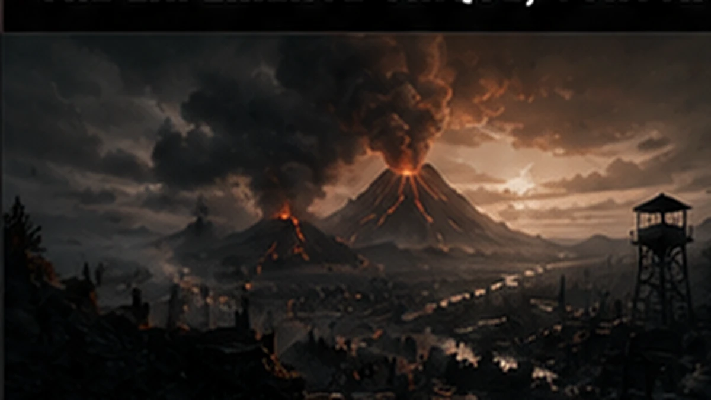
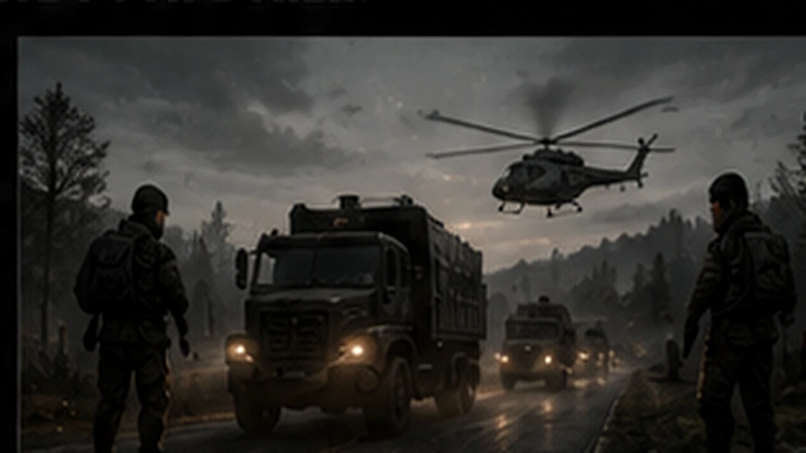
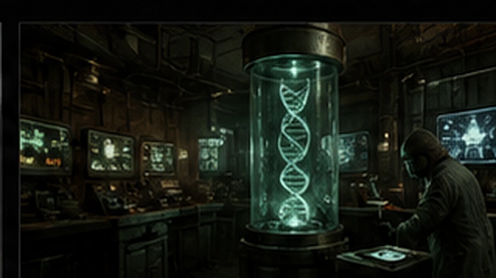
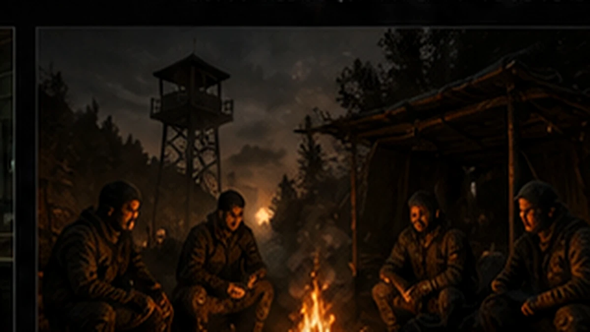

01 // Monde
Un monde transformé
Le volcan a bouleversé Chernarus. De nouvelles zones, de nouveaux dangers et des secrets apparaissent au fil des saisons.
01 Senzany // Portail officiel
Un serveur DayZ PVE français où progression, exploration, événements et communauté construisent une aventure qui ne ressemble à aucune autre.
02 Senzany // Bien plus qu’un serveur
Découvrez les quatre piliers qui font vivre Senzany au quotidien. Cette section présente notre univers : elle ne remplace pas la navigation du portail.

Le volcan a bouleversé Chernarus. De nouvelles zones, de nouveaux dangers et des secrets apparaissent au fil des saisons.

Convois, boss, courses et rendez-vous communautaires rythment régulièrement la vie du serveur.

Quêtes, plus de 200 crafts, économie dynamique, systèmes DNA et futurs contenus récompensent chaque survivant.

Une communauté française soudée, un staff présent et une expérience PVE pensée pour durer.
Transmission récente
Les annonces importantes du serveur et les nouveautés qui préparent la suite de l’aventure.
Nouvelle arme, équipements désertiques, convois militaires et nombreux ajustements.
Lire l’annonce ↗Une identité estivale exclusive, disponible pendant une période limitée.
Voir la collection ↗